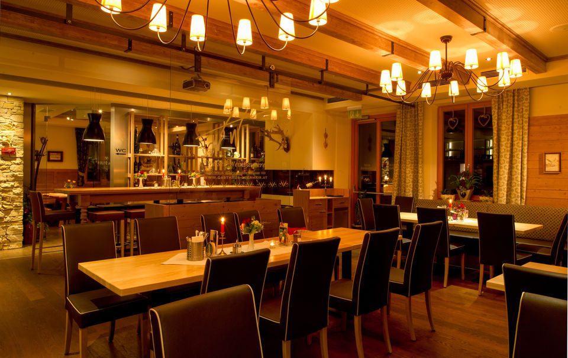

Wirtshaus seit ca. 1870 · Wels-Wimpassing
G'schmackige Hausmannskost.
Vierte Generation.
Frische regionale Schmankerl, moderne leichte Küche und vieles aus der eigenen Landwirtschaft – serviert im Familienbetrieb am Stadtrand von Wels.
Tisch reservieren Speisekarte ansehen
Wichtig: Unsere Küchenzeiten sind nicht mit den Öffnungszeiten ident – bitte vor dem Besuch kurz prüfen.
Von 26.08. bis 20.09. bleibt das Wirtshaus geschlossen. Reservierungen für die Zeit danach nehmen wir gerne entgegen.
Öffnungszeiten
- Mittwoch – Freitag
- 10:00 – 24:00
- Samstag – Sonntag
- 10:00 – 16:00
- Montag & Dienstag
- Ruhetag
Küchenzeiten
- Mittwoch – Freitag
- 11:30 – 14:00
17:30 – 21:00 - Samstag – Sonntag
- 11:30 – 14:30
Warme Küche nur innerhalb dieser Zeiten.
Ausgezeichnet
Wirtshauskultur, die auffällt
- Falstaff 1 Gabel · 83 Punkte
- Gault&Millau im Guide gelistet
- Wirtshausführer aufgenommen im Österreichischen Wirtshausführer
- Gästestimmen Tripadvisor 4,2 aus 75 Bewertungen · Google 4,6
Aus Küche, Hof und Keller
Was bei uns auf den Tisch kommt
Traditionelle Hausmannskost und eine moderne, leichte Küche – zubereitet mit saisonalen Produkten aus der Region und aus der eigenen Landwirtschaft. So bleibt der Anteil an Frischprodukten konstant hoch.
Besonders stolz sind wir auf unseren hausgemachten Most und auf eine ausgesuchte Palette gepflegter Qualitätsweine zu einem hervorragenden Preis-Leistungs-Verhältnis.
-
Tageskarte
Täglich wechselnde Gerichte, abgestimmt auf Saison und Ernte.
-
Schmankerl
Die Klassiker des Hauses – bodenständig und ehrlich gekocht.
-
Fischwochen
Im Frühling der Schwerpunkt: Fisch und frisches junges Gemüse.
-
Zum Mitnehmen
Speisen auch zum Abholen – am liebsten im eigenen Geschirr.
Feiern & Seminare
200 Plätze im Haus, 140 im Gastgarten, Nebenräume mit Medientechnik.
Raum anfragenGutschein
Der Geschenktipp aus dem Haus: Obermair-Gutscheine für genussvolle Stunden.
Gutschein bestellenWir suchen dich
Koch/Köchin, Kellner/in, Praktikum, Doppellehre – komm auf einen Probetag.
Zur Bewerbung„Ein Betrieb kann immer nur so gut sein, wie die Menschen, die dahinter stehen.“
Familie Obermair